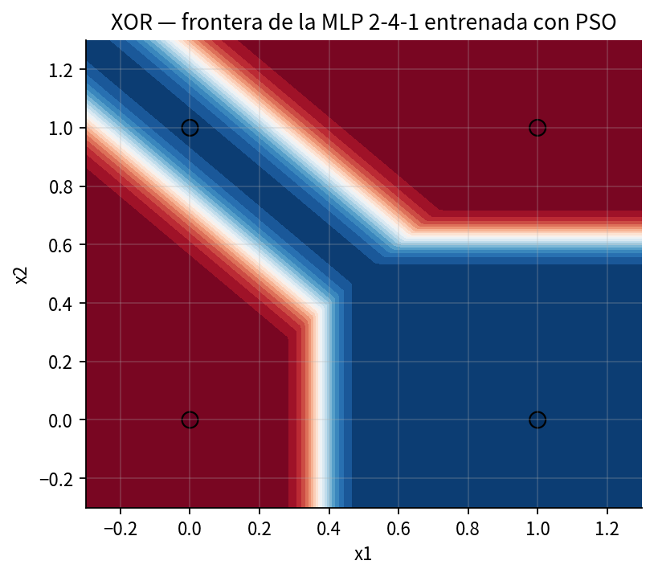
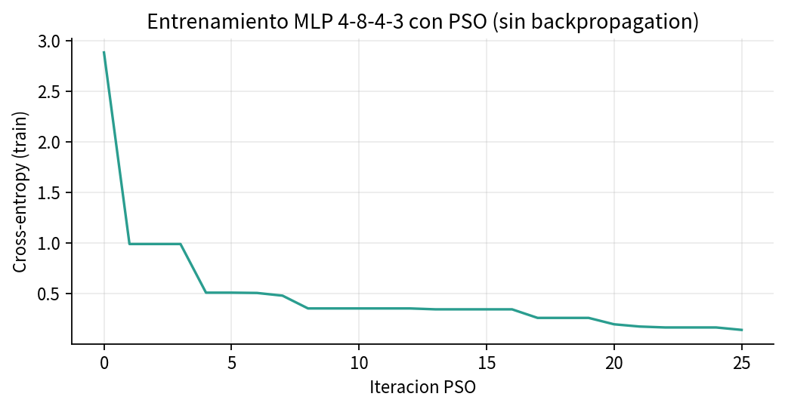
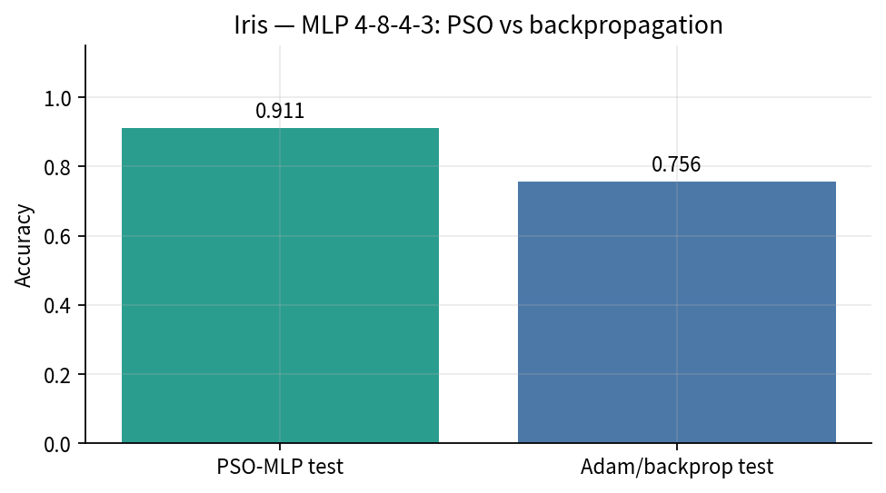

El entrenamiento se formula como optimización directa del vector de parámetros. No se calcula el gradiente analítico.

MLP 2-4-1 entrenada únicamente con PSO.

Entropía cruzada de entrenamiento por iteración.

Comparación con un MLP de sklearn (solver Adam).
MLP 4-8-4-3 sobre Iris. Parámetros: 4×8+8 + 8×4+4 + 4×3+3 = 91. Activación ReLU y salida softmax. XOR auxiliar: 2-4-1.
La partícula es el vector de pesos y sesgos. La aptitud es la entropía cruzada en entrenamiento. Solo hay pase hacia adelante.
El resultado no pretende sustituir a Adam en redes de gran escala. Muestra que el entrenamiento es un problema de optimización y que, en 91 dimensiones, el enjambre es suficiente.
| Método | Conjunto | Métrica |
|---|---|---|
| PSO | Iris test | 0.911 |
| Adam, 400 épocas | Iris test | 0.756 |
| PSO | XOR | MSE ≈ 8×10−5 |